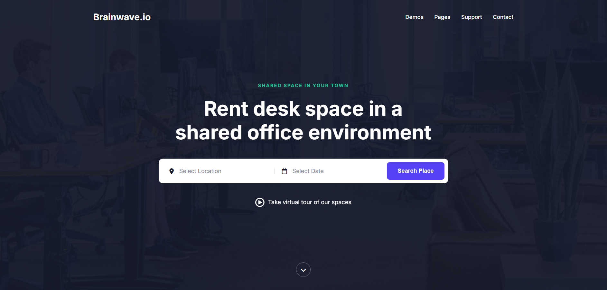
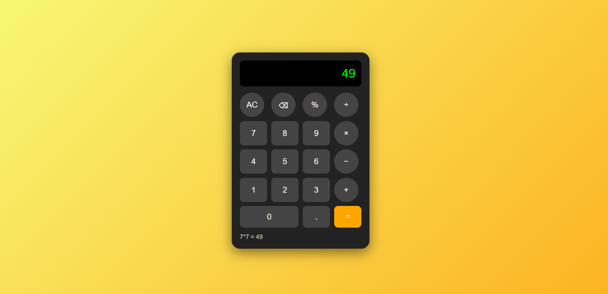

I’m a beginner developer focused on creating simple and user-friendly web projects using HTML, CSS, and JavaScript. I also have basic experience with C# and sometimes work on designing interfaces using Figma and Photoshop. I aim to build websites that are clean, responsive, and visually appealing. Even though I’m still at the beginning of my journey, I truly enjoy learning programming and exploring new technologies.
I’m a beginner developer who enjoys building simple and clean web projects using HTML, CSS, and JavaScript. I’m also familiar with Git for version control and have basic experience with C#. I like combining both technical and creative skills to bring ideas to life, using tools like Figma and Photoshop for design.
I started learning programming not long ago, but I’m already exploring different areas of development and improving my skills step by step. I focus on writing clear, understandable code and creating user-friendly interfaces.
I enjoy learning new technologies, experimenting with small projects, and gradually becoming more confident as a developer. For me, programming is not just about code, but also about solving problems and building something useful.
When I’m not coding, I often spend time learning design, watching tutorials, or looking for inspiration for new projects.
Finally, a few quick facts about me:
One last thing, I'm available for freelance work, so feel free to reach out and say hello! I promise I don't bite 😉
The skills, tools and technologies I am really good at:
Some of the noteworthy projects I have built:


Nice things people have said about me:
"Job well done! I am really impressed. She is very very good at what she does :) I would recommend Maria and will rehire in the future for Frontend development."
"Great guy, highly recommended for any COMPLEX front-end development job! Her skills are top-notch and he will be an amazing addition to any team."
"Maria was extremely easy and pleasant to work with and he really cares about the project being a success. Maria has a high level of knowledge and was able to work on my MERN stack application without any issues."
What's next? Feel free to reach out to me if you're looking for a developer, have a query, or simply want to connect.